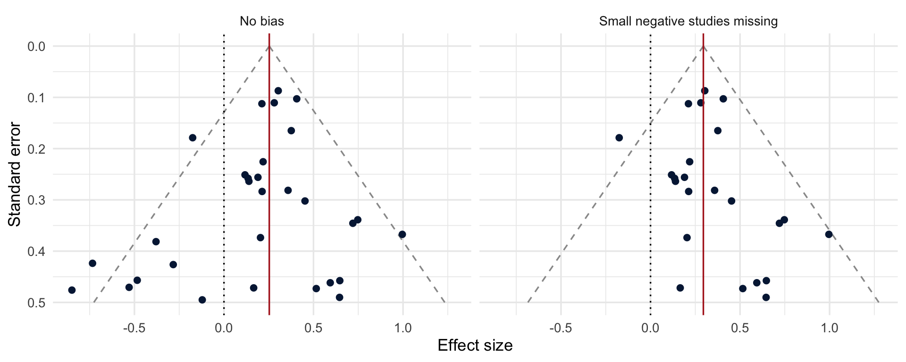
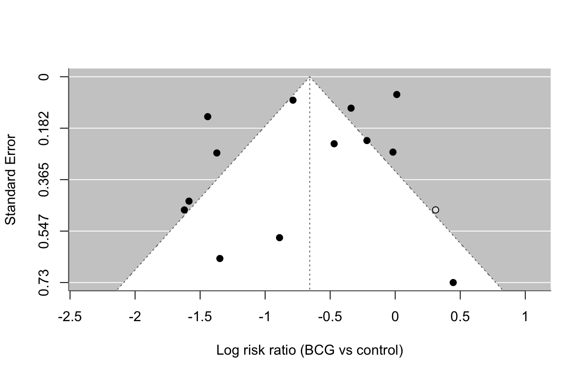
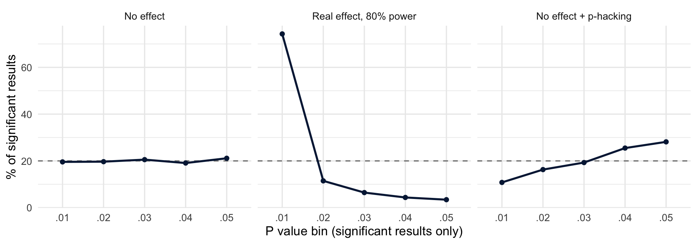
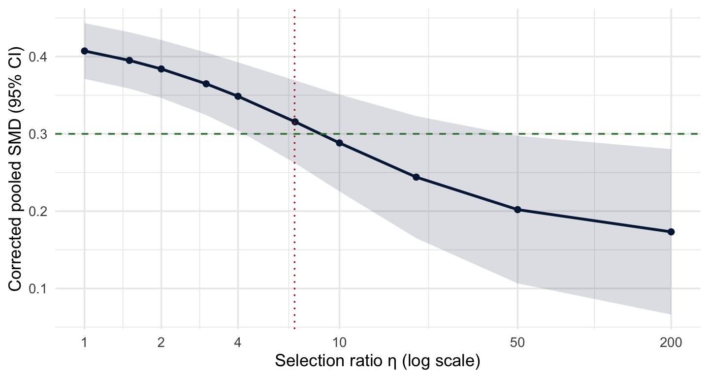

explain how publication and related reporting biases arise, and why they distort meta-analyses;
draw and interpret a funnel plot, choose an appropriate asymmetry test, and recognise causes of asymmetry other than publication bias;
apply trim-and-fill, PET-PEESE and a step-function selection model, and explain what each assumes;
use the distribution of significant P values (p-curve, p-uniform) to test for evidential value and estimate a corrected effect;
ask how much selection would be needed to explain away a result;
explain what robust Bayesian meta-analysis adds, and combine several methods into a sensitivity analysis.
R packages:dplyr, tidyr, purrr, ggplot2, metafor, knitr; puniform, zcurve, PublicationBias and RoBMA for code that runs where they are installed.
Chapter 14 dealt with participants missing from studies. This chapter deals with studies missing from the literature. When the chance that a study is published depends on its result, the published studies are a biased sample, and a meta-analysis of them is biased however well it is done. No statistical method can recover data that were never released, so the first defence is searching (Chapter 2): registers, regulatory documents and clinical study reports. The methods in this chapter detect the signature of missing studies and estimate how much they might matter.
15.1 The problem
Several related biases push in the same direction. Publication bias: studies with significant or “positive” results are more likely to be published at all. Time-lag bias: positive studies are published faster, so early meta-analyses over-represent them. Language and location bias: negative results are more often published in non-English journals or the grey literature. Selective outcome reporting: studies are published, but unfavourable outcomes are omitted (RoB 2 domain 5). All of them make the published literature look more favourable than the evidence.
Figure 15.1: Two hundred simulated studies of a small true effect (log OR 0.15, dashed green line). Significant studies are published with probability 0.95, others with probability 0.30. Left: all studies, with the unpublished in red. Right: the published studies alone, whose mean (red line) overstates the truth.
15.1.1 How large is it?
The clearest evidence comes from comparisons of published literatures with complete regulatory records. (1) obtained the US Food and Drug Administration reviews of 74 registered trials of 12 antidepressants. Of the 38 trials the FDA judged positive, 37 were published. Of the 36 judged negative or questionable, 22 were not published, 11 were published in a way that conveyed a positive result, and only 3 were published as not positive. In the journals, 94% of the trials appeared positive; in the FDA’s analysis, 51% were. The published literature overstated the standardised mean difference by 32% on average (0.41 against 0.31), from 11% to 69% for individual drugs.
Other cases show the consequences for decisions.
Rosiglitazone. A Cochrane review of the 18 published trials in 2007 could say nothing about cardiovascular safety. Two months later, a meta-analysis of 42 trials, 26 of them unpublished and obtained from the manufacturer’s register, reported an increase in myocardial infarction, OR 1.43 (95% CI 1.03 to 1.98) (2). The analysis was debated (Section 9.6.4), but the debate was possible only because the unpublished data had become available.
Reboxetine. When the manufacturer’s unpublished data were obtained, data from 74% of the patients in the trials had never been published. The published trial suggested a large benefit; with all trials the benefit was small and uncertain, and more patients on reboxetine than on placebo withdrew because of adverse events (3). The published record overstated benefit and hid harm.
Oseltamivir. Reviewers who obtained the full clinical study reports found that the drug shortened symptoms in adults by less than a day but did not reduce hospital admissions, a less favourable picture than the published trials had supported for national stockpiling (4).
Of 677 completed trials registered in ClinicalTrials.gov between 2000 and 2007, only 46% had been published in a journal (5). Even published trials are incompletely reported: information is lost at every step from protocol and clinical study report to journal article (6), and Chalmers and Glasziou estimated that, through poor design, non-publication and poor reporting, up to 85% of research investment is wasted (7). The ROB-ME tool assesses the risk of bias due to missing evidence in a synthesis (8).
15.2 Detecting small-study effects
15.2.1 The funnel plot
A funnel plot shows each study’s effect against its precision (usually its standard error, plotted with the most precise studies at the top). Without bias, small studies scatter widely and symmetrically around the pooled effect, large studies narrowly, forming an inverted funnel. If small studies with unfavourable results are missing, one corner of the funnel is empty.
Code
set.seed(42)se_f <-runif(30, 0.05, 0.50)y_f <-rnorm(30, 0.3, se_f)fun_df <-bind_rows(tibble::tibble(y = y_f, se = se_f, data ="No bias"), tibble::tibble(y = y_f, se = se_f, data ="Small negative studies missing") |>filter(!(y <0& se >0.25)))pools <- fun_df |>summarise(.by = data, pool =weighted.mean(y, 1/ se^2))cones <- pools |>crossing(se =seq(0, 0.5, length.out =50)) |>mutate(lo = pool -1.96* se, hi = pool +1.96* se)ggplot(fun_df, aes(y, se)) +geom_line(data = cones, aes(lo, se), linetype ="dashed", colour ="grey60") +geom_line(data = cones, aes(hi, se), linetype ="dashed", colour ="grey60") +geom_point(colour ="#041E42", size =2) +geom_vline(data = pools, aes(xintercept = pool), colour ="#B22222") +geom_vline(xintercept =0, linetype ="dotted") +facet_wrap(~ data) +scale_y_reverse() +labs(x ="Effect size", y ="Standard error")

Figure 15.2: Simulated funnel plots of 30 studies with a true effect of 0.3. Left: all studies. Right: small studies (SE > 0.25) with negative results suppressed. Red line: inverse-variance pooled estimate.
Funnel plots need care. With fewer than about 10 studies they are uninterpretable (9). And asymmetry shows only that smaller studies report different effects, a small-study effect; publication bias is one cause, but others include genuine differences (small trials often enrol higher-risk patients or deliver the intervention more intensively), poorer methods in small trials, artefacts of the effect measure, and chance. Contour-enhanced funnel plots, which shade the regions of statistical significance, help distinguish asymmetry caused by missing non-significant studies from other causes.
15.2.2 Tests for asymmetry
Egger’s test regresses the standardised effect on precision (equivalently, the effect on its standard error); an intercept away from zero indicates asymmetry. Because the tests have little power, a threshold of P < 0.10 is often used. For odds ratios, Egger’s test has inflated false-positive rates, because the log odds ratio and its standard error are correlated; Peters’ test, which regresses the effect on the inverse of the total sample size, and Harbord’s test are preferred for binary outcomes. Begg’s rank correlation test has lower power.
Code
bcg <-escalc("RR", ai = tpos, n1i = tpos + tneg, ci = cpos, n2i = cpos + cneg, data = dat.bcg)m_bcg <-rma(yi, vi, data = bcg, method ="REML")eg <-regtest(m_bcg, model ="lm", predictor ="sei") # Eggerbg <-ranktest(m_bcg) # Beggpt <-regtest(m_bcg, model ="lm", predictor ="ninv") # Peters: effect on 1/npt_wrong <-regtest(m_bcg, model ="lm", predictor ="ni") # a common error: effect on nround(c(Egger = eg$pval, Begg = bg$pval, Peters = pt$pval, `Peters on n (wrong)`= pt_wrong$pval), 3)
Egger Begg Peters Peters on n (wrong)
0.189 0.952 0.175 0.001
The three tests agree that the 13 BCG trials show no detectable asymmetry. Regressing on n rather than 1/n gives a spurious signal: the trials range from 262 to more than 176 000 participants, and on the n scale the single huge trial acts as a lever. “No asymmetry” is not “no bias”: with 13 heterogeneous trials (I² over 90%, largely explained by latitude, Section 10.1) these tests have little power, and heterogeneity can create or hide asymmetry on its own.
15.2.3 Trim-and-fill
Trim-and-fill estimates how many studies are missing from the sparse side of the funnel, imputes their mirror images, and recomputes the pooled estimate (10).
Code
tf <-trimfill(m_bcg)funnel(tf, xlab ="Log risk ratio (BCG vs control)")

Figure 15.3: Trim-and-fill applied to the BCG trials. Filled points would be imputed studies.
Here trim-and-fill imputes 1 missing study, and the RR moves from 0.49 to 0.52 (0.37 to 0.74). Trim-and-fill is easy to explain but is a sensitivity analysis, not a correction: it assumes that the asymmetry is entirely due to missing studies and that those studies mirror the observed ones. It is misleading when heterogeneity causes the asymmetry, and in simulations it usually corrects too little (11).
15.3 Correcting for small-study effects: PET-PEESE
PET-PEESE treats the small-study pattern as a regression and extrapolates it to a study of infinite size (12). The precision-effect test (PET) fits a weighted meta-regression of each study’s effect on its standard error:
\[\hat\theta_i = \beta_0 + \beta_1 SE_i .\]
The slope β₁ is the small-study effect (essentially Egger’s test). The intercept β₀ is the predicted effect of a study with SE = 0, which would always be published and has no small-study quirks: the effect with the small-study pattern removed. When there is a true effect, a straight line over-corrects, so the precision-effect estimate with standard error (PEESE) uses \(SE_i^2\) instead. The conventional two-step rule reports the PEESE intercept if the PET intercept differs significantly from zero, and the PET intercept otherwise.
Code
set.seed(42)se_i <-runif(25, 0.08, 0.45)yi <-rnorm(25, 0.20, se_i) # true effect 0.20pub <-!(yi <0.05& se_i >0.25) # small, disappointing trials stay in the drawerd_pp <- tibble::tibble(yi = yi[pub], sei = se_i[pub], vi = sei^2)m_naive <-rma(yi, vi, data = d_pp)m_pet <-rma(yi, vi, mods =~ sei, data = d_pp)m_peese <-rma(yi, vi, mods =~ vi, data = d_pp)p_pet <-coef(summary(m_pet))["intrcpt", "pval"]
Figure 15.4: PET (red, straight line in SE) and PEESE (orange, curve in SE²) fitted to the published trials and extrapolated to SE = 0. Green dashed: the true effect (0.20); grey dotted: naive pooled estimate.
Of 25 trials, 20 were published, and the naive pooled estimate, 0.31, overstates the truth by 54%. The PET slope is 1.05, a clear small-study effect. The PET intercept, 0.11 (P = 0.29), is not significantly different from zero, so the two-step rule would report it and conclude that the data are consistent with no effect. That is wrong here; the PEESE intercept, 0.22, is close to the truth. With few studies PET has little power, and its straight line over-corrects when a real effect exists. PET-PEESE is a sensitivity analysis, not an oracle, and like every funnel-based method it cannot tell publication bias from other causes of small-study effects.
15.4 Two simulated literatures
PET-PEESE was tested above on a small literature. To test the remaining methods we need larger literatures whose truth we know. Each of the two below runs 150 trials with 15 to 120 patients per arm; the outcome is a standardised mean difference with true value 0.30 in one literature and 0 in the other, with slight heterogeneity. Every trial significant in favour of treatment is published, and 15% of the rest: a non-significant trial is about 6.7 times less likely to be published.
Code
make_lit <-function(delta, k_all =150, seed =629) {set.seed(seed) n <-round(runif(k_all, 15, 120)) # patients per arm sei <-sqrt(2/ n) # approximate SE of an SMD theta <- delta +rnorm(k_all, 0, 0.05) # each trial's true effect yi <-rnorm(k_all, theta, sei) p <-2*pnorm(-abs(yi / sei)) sig <- p <0.05& yi >0 keep <-sample(which(!sig), round(0.15*sum(!sig))) # 15% of the rest are published all <-data.frame(yi, sei, vi = sei^2, z = yi / sei, p, theta,published = sig |seq_len(k_all) %in% keep)structure(all[all$published, ], all = all)}lit <-make_lit(0.30)lit0 <-make_lit(0)naive <-rma(yi, vi, data = lit)naive0 <-rma(yi, vi, data = lit0)
Of the trials with a true SMD of 0.30, 80 are published, and the naive pooled estimate is 0.41, about 36% too high. With no true effect, only 27 trials are published and the naive estimate is 0.03: with no effect, few trials reach significance, so selection removes most of the evidence rather than creating a large false effect.
15.5 Selection models
Funnel-plot methods see only a pattern. A selection model writes down a model of the publication process, the probability \(w(p)\) that a study with P value p is published, and estimates it together with the pooled effect (13):
The denominator, the probability that any study is published, normalises the likelihood for the selected sample. In the step-function model of Vevea and Hedges, one-sided P values are divided into bands (for example 0 to 0.025, 0.025 to 0.05, 0.05 to 0.10, 0.10 to 0.50, 0.50 to 1); the first band has weight 1 and the others are estimated. A one-sided P of 0.025 is a two-sided P of 0.05 in the favourable direction. metafor fits these models with selmodel(); weightr is an alternative.
Code
m_ml <-rma(yi, vi, data = lit, method ="ML")p_one <-pnorm(lit$yi / lit$sei, lower.tail =FALSE) # one-sided P valuestable(cut(p_one, c(0, 0.025, 0.05, 0.10, 0.50, 1))) # published studies per band
sel <-selmodel(m_ml, type ="stepfun", steps =c(0.025, 0.05, 0.10, 0.50))sel3 <-selmodel(m_ml, type ="stepfun", steps =0.025) # one cut-point: "3PSM"tibble::tibble(Model =c("Naive (ML)", "Step function, four cut-points", "Step function, one cut-point (3PSM)"),`Pooled SMD (95% CI)`=sprintf("%.2f (%.2f to %.2f)",c(m_ml$b[1], sel$b[1], sel3$b[1]),c(m_ml$ci.lb, sel$ci.lb, sel3$ci.lb),c(m_ml$ci.ub, sel$ci.ub, sel3$ci.ub)),`Relative publication weights`=c("", paste(sprintf("%.2f", sel$delta), collapse =", "),paste(sprintf("%.2f", sel3$delta), collapse =", ")),`LRT for selection, P`=c("", format.pval(sel$LRTp, digits =2, eps =0.001),format.pval(sel3$LRTp, digits =2, eps =0.001))) |>kable(align ="lccc")
Model
Pooled SMD (95% CI)
Relative publication weights
LRT for selection, P
Naive (ML)
0.41 (0.37 to 0.44)
Step function, four cut-points
0.28 (0.15 to 0.40)
1.00, 0.10, 0.13, 0.07, 0.18
<0.001
Step function, one cut-point (3PSM)
0.26 (0.15 to 0.36)
1.00, 0.09
<0.001
Allowing for selection moves the estimate from 0.41 towards the truth of 0.30, and the estimated weights recover the selection built into the simulation: studies that were not significant were published about 0.09 times as often as significant ones (the true value is 0.15). The bands between 0.025 and 0.50 contain only a handful of studies, so their individual weights are imprecise.
Selection models are data-hungry: every band needs studies in it (selmodel() stops with an error if a band is empty, as it would for the 20 published trials of the PET-PEESE example), and with modest numbers of studies it is better to use few cut-points (a single cut at 0.025, the “three-parameter selection model”), or fix the weights at plausible values and report how the estimate changes (14).
15.6 The distribution of significant P values
A different family of methods looks not at effects versus precision but at the shape of the statistically significant P values. Under the null hypothesis, P values are uniform (Section 11.2.1), so among significant results each 0.01-wide slice from 0 to 0.05 is equally likely: a flat p-curve. With a real effect, small P values are more likely: a right-skewed curve, more so as power increases. With no effect but P-hacking (adding participants, dropping outliers or switching outcomes until P dips below 0.05), results bunch just below 0.05: a left-skewed curve (15).
Code
set.seed(42)p_null <-2*pnorm(-abs(rnorm(20000)))p_true <-2*pnorm(-abs(rnorm(20000, 2.8, 1)))p_hack <-replicate(4000, { x <-rnorm(70); y <-rnorm(70)for (n inseq(20, 70, by =10)) { p <-t.test(x[1:n], y[1:n], var.equal =TRUE)$p.valueif (p <0.05) break } p})tibble::tibble(p =c(p_null, p_true, p_hack),scenario =rep(c("No effect", "Real effect, 80% power", "No effect + p-hacking"),c(20000, 20000, 4000))) |>filter(p <0.05) |>mutate(bin =cut(p, seq(0, 0.05, 0.01), labels =c(".01", ".02", ".03", ".04", ".05")),scenario =factor(scenario, c("No effect", "Real effect, 80% power", "No effect + p-hacking"))) |>count(scenario, bin) |>mutate(.by = scenario, pct =100* n /sum(n)) |>ggplot(aes(bin, pct, group = scenario)) +geom_hline(yintercept =20, linetype ="dashed", colour ="grey50") +geom_line(linewidth =1, colour ="#041E42") +geom_point(colour ="#041E42") +facet_wrap(~ scenario) +labs(x ="P value bin (significant results only)", y ="% of significant results")

Figure 15.5: Distribution of significant P values in 0.01 bins. No effect: flat. A real effect with 80% power: right-skewed. No effect plus optional stopping (start with 20 per arm, add 10 up to five times until P < 0.05): left-skewed. Dashed line: 20% per bin.
Publication bias filters which significant studies are seen, but it cannot make a null effect produce right-skewed P values. A right-skewed curve is therefore evidence that the literature contains a real effect.
15.6.1 P-curve
P-curve keeps only the significant results and asks whether their P values are right-skewed. Each significant P value is converted to a “pp-value”, its probability under the null given significance (\(p/0.05\)), and the pp-values are combined with Stouffer’s method; a significant result indicates evidential value. A second test asks whether the curve is flatter than one produced by studies with only 33% power, which would suggest the evidence is too weak to trust.
Code
pcurve_tests <-function(d) { s <-subset(d, p <0.05& yi >0) z <- s$yi / s$sei pp0 <- s$p /0.05# uniform under no effect ncp <-qnorm(0.975) -qnorm(2/3) # z-shift giving 33% power pp33 <- (pnorm(z, ncp, lower.tail =FALSE) +pnorm(-z, ncp)) / (1/3) # uniform under 33% power Z_rs <-sum(qnorm(pp0)) /sqrt(nrow(s)) Z_fl <-sum(qnorm(pmin(pp33, 1-1e-12))) /sqrt(nrow(s))c(k_significant =nrow(s), `share P < 0.025`=mean(s$p <0.025),`right-skew test P`=pnorm(Z_rs), `flatness (33% power) test P`=pnorm(Z_fl, lower.tail =FALSE))}round(rbind(`True SMD 0.30`=pcurve_tests(lit), `True SMD 0`=pcurve_tests(lit0)), 3)
k_significant share P < 0.025 right-skew test P
True SMD 0.30 68 0.735 0.000
True SMD 0 5 0.600 0.453
flatness (33% power) test P
True SMD 0.30 0.941
True SMD 0 0.116
With a real effect the curve is strongly right-skewed and not flatter than a 33%-power literature; with no effect it is not right-skewed. P-curve tests for evidential value but does not give a good corrected estimate, needs several independent significant results, and is misleading if the studies test different hypotheses (15). dmetar::pcurve() and the online p-curve app implement the full method.
15.6.2 P-uniform
P-uniform turns the same idea into an estimate (16,17). For a candidate effect δ, compute each significant study’s conditionalP value: the probability, given δ and given that the study was significant, of a result at least as large as the one observed. At the true δ these conditional P values are uniform. If δ is too small, the observed effects look surprisingly large and the conditional P values pile up near 0; if δ is too large, they pile up near 1. P-uniform finds the δ at which they look uniform, here using the simple criterion that their sum equals its expectation, k/2.
Code
puniform_simple <-function(d) { s <-subset(d, p <0.05& yi >0) crit <-qnorm(0.975) * s$sei # smallest significant effect cond_p <- \(delta) pnorm((s$yi - delta) / s$sei, lower.tail =FALSE) /pnorm((crit - delta) / s$sei, lower.tail =FALSE) k <-nrow(s); half_w <-qnorm(0.975) *sqrt(k /12) # normal approximation to Irwin-Hall f <- \(delta, target) sum(cond_p(delta)) - targetc(estimate =uniroot(f, c(-2, 2), target = k /2)$root,lower =uniroot(f, c(-2, 2), target = k /2- half_w)$root,upper =uniroot(f, c(-2, 2), target = k /2+ half_w)$root)}round(rbind(`True SMD 0.30`=puniform_simple(lit), `True SMD 0`=puniform_simple(lit0)), 2)
The corrected estimates are close to the truth. P-uniform uses only significant studies and assumes homogeneous effects; with large heterogeneity it overestimates. The puniform package implements the exact method and p-uniform*, an extension that uses all studies and allows heterogeneity:
Code
library(puniform)puniform(yi = lit$yi, vi = lit$vi, side ="right", method ="P")
Z-curve applies related ideas to whole literatures, estimating the average power of the studies from their significant z statistics, and from that the expected rates of discovery and replication (18). It is designed for large, heterogeneous literatures rather than single meta-analyses (package zcurve).
15.7 How much selection would it take?
Instead of estimating the selection, (19) ask how severe it would have to be to explain away the result. Suppose that affirmative studies (significant and favouring treatment) are η times more likely to be published than non-affirmative ones. Each non-affirmative study then stands for η studies in the full literature, and a corrected estimate up-weights non-affirmative studies by η. The question is how large η must be to bring the estimate to zero. A simple fixed-effect version of the calculation:
Code
eta_fit <-function(d, eta) { aff <- d$p <0.05& d$yi >0 w <-ifelse(aff, 1, eta) / d$vi est <-sum(w * d$yi) /sum(w) se <-sqrt(sum(w^2* d$vi)) /sum(w)c(eta = eta, est = est, lo = est -1.96* se, hi = est +1.96* se)}etas <-c(1, 1.5, 2, 3, 4, 6.7, 10, 20, 50, 200)sens <-map_dfr(etas, \(e) eta_fit(lit, e))ggplot(sens, aes(eta, est)) +geom_ribbon(aes(ymin = lo, ymax = hi), fill ="#041E42", alpha =0.15) +geom_line(colour ="#041E42", linewidth =1) +geom_point(colour ="#041E42") +geom_hline(yintercept =0.30, linetype ="dashed", colour ="#2E7D32") +geom_vline(xintercept =1/0.15, linetype ="dotted", colour ="#B22222") +scale_x_log10(breaks =c(1, 2, 4, 10, 50, 200)) +labs(x ="Selection ratio η (log scale)", y ="Corrected pooled SMD (95% CI)")

Figure 15.6: Corrected pooled SMD as the assumed selection ratio η increases (fixed-effect version: non-affirmative studies up-weighted by η). Green dashed: the truth (0.30). Red dotted: the selection ratio used in the simulation (6.7).
At the true selection ratio the corrected estimate is close to 0.30, and no plausible η brings it to zero, because the non-affirmative published studies themselves point to a positive effect. When the corrected estimate stays away from zero for any plausible degree of selection, publication bias alone cannot explain the result. The PublicationBias package implements the method with robust random-effects estimation and reports the η needed to reduce the estimate to zero or to any chosen value.
15.8 Robust Bayesian meta-analysis
Each method so far assumes one model of bias, and simulations show that every method fails in some realistic scenario (11). Robust Bayesian meta-analysis (RoBMA) averages over models instead of choosing one (20,21). It fits models that cross three questions (is there an effect? do the effects vary? is there publication bias, modelled by several selection models and by PET and PEESE?) and weights each model by how well it predicts the data. The output includes Bayes factors for the presence of an effect, of heterogeneity and of bias, and a model-averaged estimate whose uncertainty includes the uncertainty about which model is right.
Call:
RoBMA(d = lit$yi, se = lit$sei, algorithm = "ss", seed = 1)
Robust Bayesian meta-analysis
Components summary:
Prior prob. Post. prob. Inclusion BF
Effect 0.500 1.000 Inf
Heterogeneity 0.500 0.343 0.521
Bias 0.500 1.000 Inf
Model-averaged estimates:
Mean Median 0.025 0.975
mu 0.301 0.304 0.222 0.364
tau 0.028 0.000 0.000 0.125
omega[0,0.025] 1.000 1.000 1.000 1.000
omega[0.025,0.05] 0.177 0.155 0.060 0.425
omega[0.05,0.5] 0.143 0.132 0.053 0.298
omega[0.5,0.95] 0.142 0.131 0.053 0.297
omega[0.95,0.975] 0.156 0.139 0.054 0.360
omega[0.975,1] 0.834 1.000 0.072 1.000
PET 0.000 0.000 0.000 0.000
PEESE 0.000 0.000 0.000 0.000
The estimates are summarized on the Cohen's d scale (priors were specified on the Cohen's d scale).
(Estimated publication weights omega correspond to one-sided p-values.)
A well-known test case is a series of experiments that claimed evidence of precognition (22). A naive meta-analysis finds a small, highly significant effect; RoBMA, allowing for publication bias, finds the evidence weak (the data are in the package as Bem2011). RoBMA is computationally heavier, depends on its priors, and like every method cannot recover studies whose results were never released.
Figure 15.7: Several methods applied to the same published literature (true SMD 0.30, green dashed line).
Table 15.1: Methods for publication bias (after (11) and (21)).
Method
Type
Known behaviour in simulations
Studies needed
Trim-and-fill
Detect and correct
Corrects too little; misleading with heterogeneity
≥ 10
Egger’s test
Detect
False positives for odds ratios
≥ 10
Peters’ test
Detect
Better calibrated for binary outcomes
≥ 10
PET-PEESE
Correct
Over-corrects small effects; erratic with few studies
≥ 20
Selection models
Correct
Close to unbiased if the selection model is right
≥ 20
p-curve, p-uniform
Test, correct
Good with low heterogeneity; overestimate with high
≥ 5 significant
RoBMA
Correct
Good across many scenarios; no method wins everywhere
≥ 10
A practical sequence: search registers and regulatory sources first; draw a funnel plot if there are at least 10 studies; test for asymmetry with a test suited to the outcome; then, as sensitivity analyses, apply at least two correction methods that make different assumptions (a regression method and a selection model, or RoBMA). If corrected estimates differ meaningfully from the naive one, rate down the certainty of evidence for publication bias.
15.9.1 Does correction work?
The antidepressant trials offer a rare test, because the FDA records provide the complete evidence. (23) used only the published papers, fitted a regression line to the funnel plot and extrapolated it to a study of infinite size. Their adjusted estimate (0.29, 95% CI 0.23 to 0.35) was close to the FDA value (0.31), while the naive estimate from the journals was 0.41. It worked here because the bias came mainly from selective publication of small negative trials, there were many trials, and the true effects were similar. With few studies, high heterogeneity, or small studies that are genuinely different, corrections can be badly wrong, and usually there is no FDA record to check them against. Corrected estimates show how sensitive a naive result is to publication bias; they do not replace it.
Key points
Publication, time-lag, language and outcome-reporting biases all make the published literature look more favourable; the antidepressant, rosiglitazone and reboxetine cases show the consequences.
Searching registers, regulatory documents and clinical study reports is the main defence; statistical methods cannot recover unreleased data.
A funnel plot shows small-study effects, which have causes other than publication bias; interpret it only with at least 10 studies, and use Peters’ or Harbord’s test for odds ratios.
Trim-and-fill corrects too little and is misleading with heterogeneity; PET-PEESE and selection models make explicit, different assumptions and are better treated as sensitivity analyses.
The shape of significant P values tests for evidential value (p-curve) and supports a corrected estimate (p-uniform).
Ask how much selection would be needed to explain a result away; use RoBMA, or several methods, to reflect uncertainty about the bias model.
Exercises
Re-run lit-sim with heterogeneity SD 0.20 instead of 0.05. How do PET-PEESE, the selection model and p-uniform perform?
Draw a contour-enhanced funnel plot of the BCG trials with funnel(m_bcg, level = c(90, 95, 99), shade = c("white", "grey80", "grey60"), refline = 0). Where do the trials fall?
Fit the three-parameter selection model to lit with the weight for non-significant studies fixed at 0.5, 0.25 and 0.10 (selmodel(..., delta = c(1, w))). How sensitive is the estimate?
Compute the p-curve tests for the published studies of lit0 after adding five “p-hacked” studies with P values between 0.04 and 0.05.
Find a meta-analysis in your field and compare its pooled estimate with PET-PEESE and a three-parameter selection model.